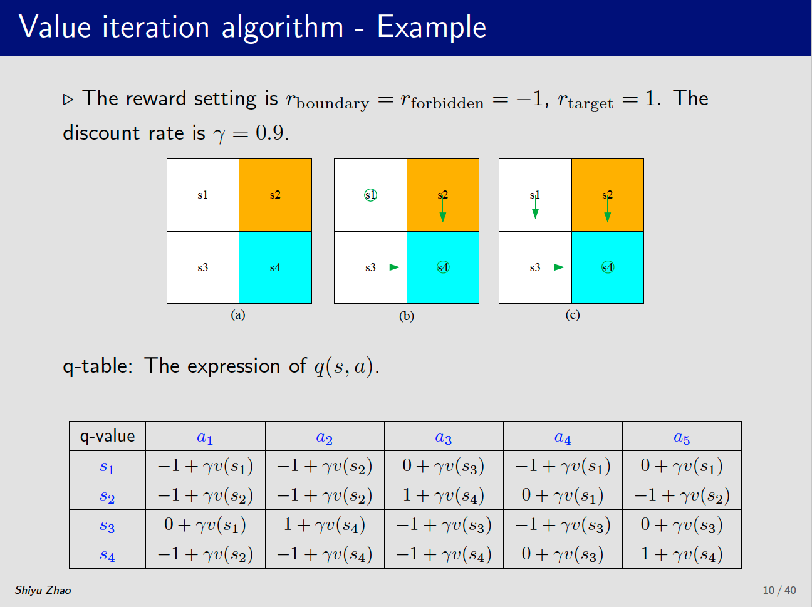
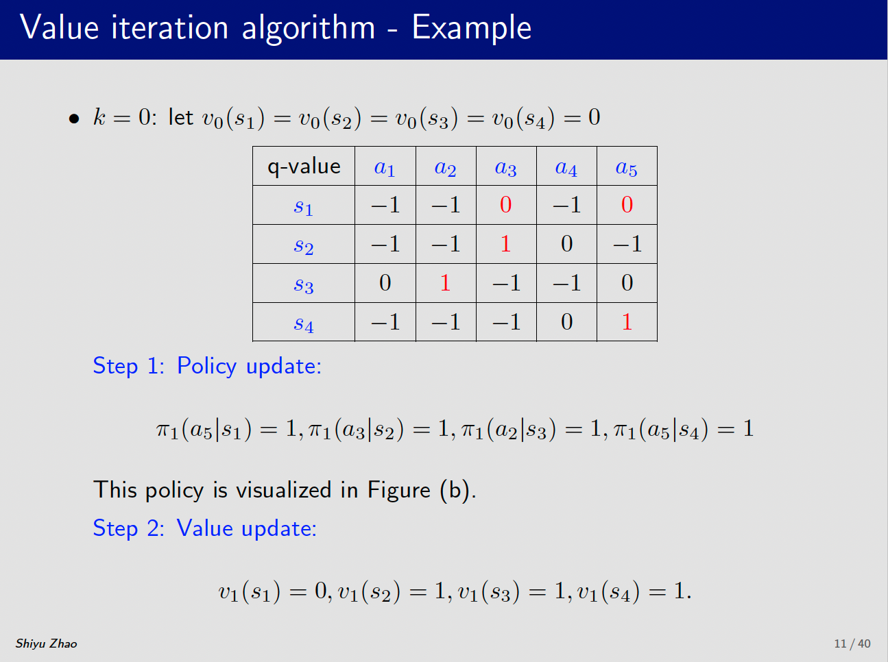
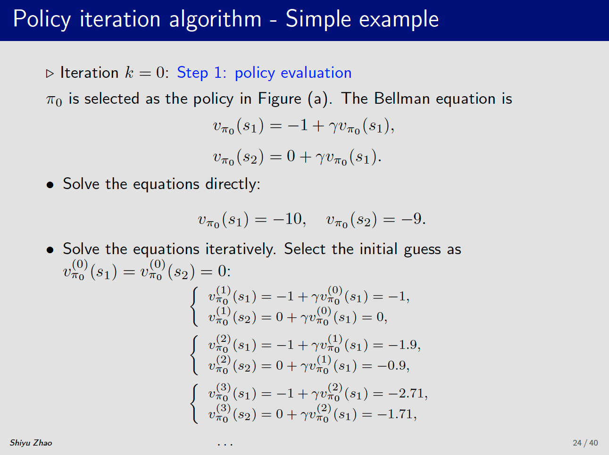
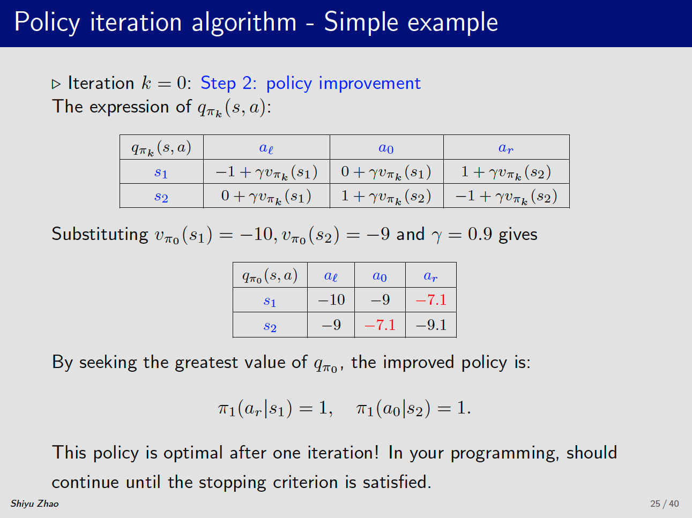
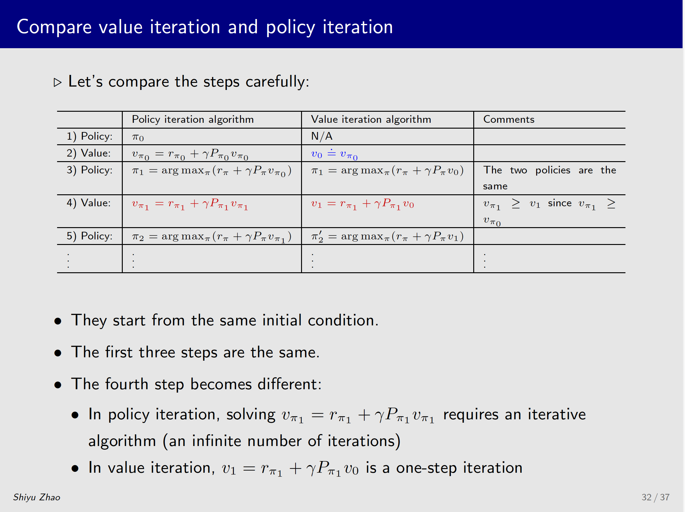
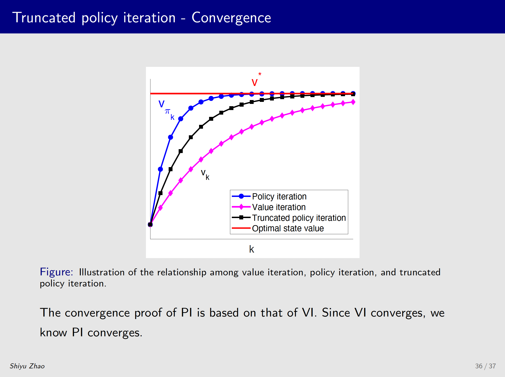
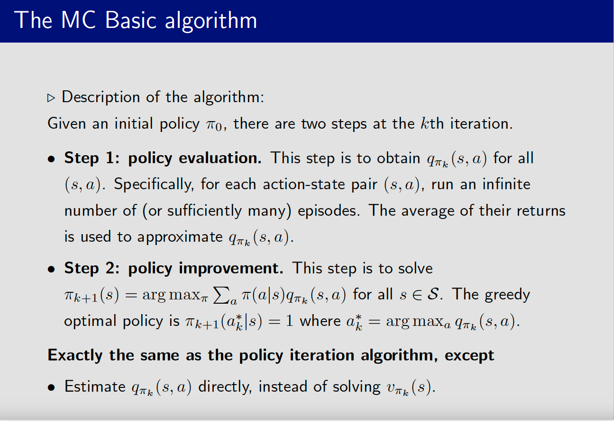
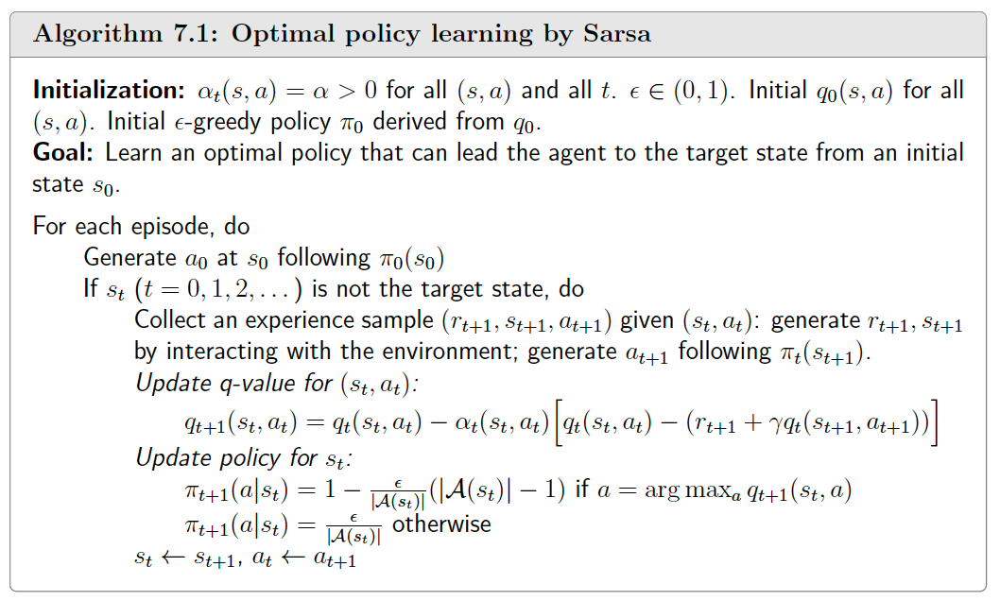

强化学习基础
强化学习的终极目标是让一个智能体（Agent）通过与环境（Environment）的持续交互，学会一个最优策略（Policy），从而获得最大化的累积奖励（Cumulative Reward）。
基本概念
1. 智能体 (Agent)
- 学习者或决策者。例如：下棋的AI程序、自动驾驶汽车、玩游戏的角色。
2. 环境 (Environment)
- 智能体所处的外部世界，智能体与之交互的一切。例如：棋盘、道路、游戏界面。
3. 状态 (State, S)
- 环境在某一时刻的特定情况或配置。例如：棋盘上所有棋子的位置、汽车当前的坐标和速度。
- 注意：智能体有时无法看到完整状态，只能获得一个观测 (Observation)，这通常被称为部分可观测环境。
4. 动作 (Action, A)
- 智能体在某个状态下可以做出的行为。例如：移动一个棋子、踩油门或刹车、按“向左”键。
- 动作空间 (Action Space)：所有可能动作的集合。
5. 奖励 (Reward, R)
- 环境在智能体执行一个动作后，反馈给智能体的一个标量信号。这是智能体判断好坏的核心依据。
- 例如：赢得比赛（+100），吃掉豆子（+10），碰到敌人（-100）。
- 设计奖励函数是强化学习成功的关键，它定义了智能体需要完成的任务。
6. 策略 (Policy, π)
- 智能体的行为函数，是状态到动作的映射。它决定了在某个状态下应该采取什么动作。
- 可以看作是智能体的大脑。策略可以是确定性的（
a = π(s)），也可以是随机性的（π(a|s)表示在状态s下选择动作a的概率）。
7. 轨迹（trajectory）：有时也称为 episode 或 rollout，是一系列State -> Action -> Reward的动作链。
$$
S_{1} \xrightarrow[r=0]{a_{2}} S_{2} \xrightarrow[r=0]{a_{3}} S_{5} \xrightarrow[r=0]{a_{3}} S_{8} \xrightarrow[r=1]{a_{2}} S_{9}
$$
8. 价值函数 (Value Function, V(s))
- 这是强化学习中最核心的概念之一。奖励代表的是即时好处，而价值函数代表的是长期好处。
- 状态价值函数 V(s)：表示从状态
s开始，遵循某个策略π所能获得的预期累积奖励。 - 动作价值函数 Q(s, a)：表示在状态
s下执行动作a后，再遵循策略π所能获得的预期累积奖励。 - 核心思想：一个动作可能带来很小的即时奖励，但能导向未来有巨大奖励的状态（高价值），那么这个动作总体上也是好的。例如，象棋中牺牲一个卒（负奖励）以获取局面优势（高价值状态）。
9. 模型 (Model)
- 智能体对环境动态变化规律的内部表示。模型预测环境下一步会变成什么样子。
- 例如：预测“在状态s下执行动作a，下一个状态s’是什么，以及会得到多少奖励”。
- 并非所有强化学习方法都需要模型。因此产生了两种主要方法：
- 基于模型 (Model-based)：有环境模型，可以进行“想象”和规划。
- 无模型 (Model-free)：没有环境模型，直接通过试错来学习策略或价值函数（如著名的Q-Learning, DQN）。
贝尔曼公式
令$G_t$代表一个轨迹的Return，即为：
$$
G_t = R_{t+1} + \gamma R_{t+2} + \gamma^2 R_{t+3} + …
$$
State Value
我们如何用一个值来衡量策略（policy）的好坏，答案就是State Value.
State value是从一个状态出发，得到的所有可能轨迹的平均Return，可以用State Value来指导优化所需要选用的策略。
那么State Value为：
$$
v_{\pi}(s) = E[G_t | S_t =s].
$$
Action Value
Action value是指从一个state出发，选用某个Action所得到的平均Return，可以用来评估某个Action的好坏。
那么Action Value为：
$$
q_{\pi}(s,a) = E\left[G_{t}|S_{t} = s, A_{t}=a\right]
$$
State value和Action Value的联系：
$$
\underbrace{\mathbb{E}[G_{t}\mid S_{t}=s]}_{v_{\pi}(s)}=\sum_{a\in\mathcal{A}}\underbrace{\mathbb{E}[G_{t}\mid S_{t}=s,A_{t}=a]}_{q_{\pi}(s,a)}\pi(a\mid s).
$$
即：
$$
v_{\pi}(s) = \sum_{a}\pi(a|s)q_{\pi}(s,a)
$$
如果知道action value，即可求解state value.
Bellman Equation
贝尔曼公式描述的是两个状态之间的state value之间的关系：
$G_t$和$G_{t+1}$的关系为：
$$
G_t = R_{t+1} + \gamma G_{t+1}
$$
那么有：
$$
\begin{aligned}
v_{\pi}(s) &= \mathbb{E}[G_{t} \vert S_{t} = s] \\
&= \mathbb{E}[R_{t+1} + \gamma G_{t+1} \vert S_{t} = s] \\
&= \mathbb{E}[R_{t+1} \vert S_{t} = s] + \gamma \mathbb{E}[G_{t+1} \vert S_{t} = s].
\end{aligned}
$$
- 第一项为状态$s$下的即时奖励期望。
- 第二项为状态$s$下的将来的奖励期望。
Elementwise form:
$$
\begin{aligned}
v_{\pi}(s) &= \sum_{a} {\pi}(a|s) \left[ \underbrace{\sum_{r}p(r|s,a)r + \gamma \sum_{s’}p(s’|s,a)v_{\pi}(s’)}_{q_{\pi}(s,a)}\right] \\
&= \sum_{a}\pi(a|s)q_{\pi}(s,a)
\end{aligned}
$$
Action-value function:
$$
q_{\pi}(s,a) = \sum_{r}p(r|s,a)r + \gamma \sum_{s’}p(s’|s,a)v_{\pi}(s’)
$$
如果知道state value，即可求解Action Value
Matrix form:
$$
\begin{align*}
v &= r + \gamma Pv \\
&= r + \gamma v’
\end{align*}
$$
其中$r$为即时奖励，$\gamma$为时间折扣，$P$为状态转移矩阵。
贝尔曼最优公式
对于每个状态$S$，策略$\pi^*$的State Value都大于其他任意策略$\pi$的State Value，即$\pi^*(s) \geq \pi(s)$,那么$\pi^*$即为最优策略。
Elementwise Form of BOE(Bellman Optimality Equation)：
$$
\begin{align*}
v(s) &= \max_{\pi(s) \in \Pi(s)} \sum_{a \in \mathcal{A}} \pi(a|s) \left( \sum_{r \in \mathcal{R}} p(r|s, a) r + \gamma \sum_{s’ \in \mathcal{S}} p(s’|s, a) v(s’) \right) \\
&= \max_{\pi(s) \in \Pi(s)} \sum_{a \in \mathcal{A}} \pi(a|s) q(s, a)
\end{align*}
$$
其中$\pi(a|s)$为策略在某个状态下的动作概率，且$\pi(a|s)\geq0$，因此当$q(s,a)$取得最大值，采取动作$a$时，策略为最优策略。
值迭代和策略迭代
值迭代
假设值已知，求解所有可能Action的$q(s,a)$，通过最大的action value去更新策略，求解新的Value State。
两个步骤：
-
策略更新：
$$
\pi_{k+1} = arg \underset{\pi}{max}(r_{\pi} + \gamma P_{\pi}v_{k})
$$$v_{k}$是已知的（迭代开始时可以随意赋值）

-
价值更新：选定策略后，更新state value
$$
v_{k+1} = r_{\pi_{k+1}} + \gamma P_{\pi_{k+1}}v_{k}
$$

策略迭代
-
策略评估：
$$
v_{\pi_{k}} = r_{\pi_{k}} + \gamma P_{\pi_{k}}v_{\pi_{k}}
$$
策略$\pi_{k}$是已知的（随机选择策略），求解该策略的state value时，采用迭代的方法求解。

-
策略更新：
$$
\pi_{k+1} = arg \underset{\pi}{max}(r_{\pi} + \gamma P_{\pi}v_{\pi_{k}})
$$

截断的策略迭代
对比值迭代和策略迭代的步骤如下：在两个迭代算法中，假设第一次state value的值一致，那么可以同时更新相同的Action，再根据Action估计State Value时，两者差异有所体现（第4步的Value 求解），值迭代仅仅迭代一次，而策略迭代需要迭代无穷次才能求得最终的State Value($v_{\pi1}$)


策略迭代方法中，策略评估过程中，需要无穷步的迭代才能评估出策略价值，现实过程中无法实现，因此推出基于截断的策略迭代方法。
当截断步骤设置为1时，等同于值迭代。步骤为无穷时，等同于策略迭代。
三种迭代算法的收敛速度

Monte Carlo Method
值迭代和策略迭代是一个model-based的方法，这个model具体指的是马尔科夫决策过程（MDP）的核心元素：
- 状态转移概率 $P(s′∣s,a)$：在状态 s下执行动作 a后，环境转移到状态 s’的概率是多少。
- 奖励函数 $R(s,a,s′)$：在状态 s下执行动作 a并转移到状态 s’ 后，能获得的即时奖励是多少。
MC Basic
主要就是将策略迭代算法变成无模型方法。
策略迭代算法中，第一步是需要评估策略价值，第二步选择$q(s,a)$最大的策略作为更新策略。
在下面的表达式中，我们不依赖于模型计算动作价值：
$$
q_{\pi_{k}}(s|a) = E[G_{t}| S_{t}=s, A_{t} = a]
$$
因此，我们可以利用Monte Carlo方法来计算动作价值：
-
从状态和动作$(s,a)$出发，在初始策略$\pi_{0}$下，生成一个轨迹。
-
计算该轨迹的价值：
$$
q_{\pi_{k}}(s|a) = E[G_{t}| S_{t}=s, A_{t} = a]
$$ -
采样多条轨迹，然后求期望
$$
q_{\pi_{k}}(s|a) = E[G_{t}| S_{t}=s, A_{t} = a] \approx \frac{1}{N}\sum_{i=1}^{N}g^{i}(s,a)
$$

缺点：
- 效率比较低，需要多次采样大量轨迹
- 轨迹长度需要足够长，否则距离较远的状态没有价值
- 没有充分利用采样轨迹信息
MC Exploring Starts
每条轨迹中包含了以其他状态和动作为起点的轨迹，该方法对这些数据进行了利用，提高了效率。
- 方法一：收集完所有轨迹后，便利所有state-action pair，计算平均价值，该方法需要等所有的轨迹收集完，效率低！
- 方法二：每收集完一个轨迹，立即计算action value，更新策略。（可以收敛）
MC $\varepsilon$-Greedy
$\varepsilon$-greedy policy:
$$
\pi(a|s)=
\begin{cases}
1-\frac{\varepsilon}{\vert\mathcal{A}(s)\vert}(\vert\mathcal{A}(s)\vert - 1) &\text{ for the greedy actions.}
\\
\frac{\varepsilon}{\vert\mathcal{A}(s)\vert} &\text{ for the other }\vert\mathcal{A}(s)\vert - 1\text{ actions.}
\end{cases}
$$
Where $\varepsilon \in [0,1]$ and $\vert\mathcal{A}\vert$ is the number of actions.
- 该方法保证了greedy action总是比其他的动作概率大
- $\varepsilon$-greedy平衡了利用和探索（exploitaion and exploration）
MC $\varepsilon$-Greedy 在MC RL algorithm中使用时，在估计完action value之后，需要根据最大的Action Value来更新策略，而MC Exploring Starts是贪婪策略，直接选择action value最大的策略进行更新，但该方法需要添加一些随机更新策略进来：
$$
\pi_{k+1}(a|s)=
\begin{cases}
1-\frac{|\mathcal{A}(s)|-1}{|\mathcal{A}(s)|}\varepsilon, &a=a_{k}^{*},
\\
\frac{1}{|\mathcal{A}(s)|}\varepsilon, &a\neq a_{k}^{*}.
\end{cases}
$$
使用$\varepsilon$-greedy policy进行采样的话，$\varepsilon$的值不能设置太大，否则最终得到的策略与greedy策略得到的最有策略不一致。
随机近似与梯度下降
Stochastic Approximation and Stochastic Gradient Descent.
RM(Robbins-Monro)算法
解决$g(w)=0$的RM算法如下：
$$
\begin{equation}
w_{k+1}=w_{k}-a_{k}\tilde{g}(w_{k},\eta_{k}),\qquad k=1,2,3,\ldots
\end{equation}
$$
其中$w_k$是根的第$k$次估计，$\tilde{g}(w_{k},\eta_{k})$是第$k$次带噪观测值，$a_k$是正的系数。
此算法不需要知道公式，只需要知道输入和输出。
随机梯度下降(Stochastic gradient descent)
解决如下问题：
$$
\min_{w} J(w) = \mathbb{E}[f(w, X)]
$$
其中$w$ 是待优化的参数，$X$ 是一个随机变量。
梯度下降(GD)
$$
w_{k+1} = w_k - \alpha_k \nabla_w J(w_k) = w_k - \alpha_k \mathbb{E}[\nabla_w f(w_k, X)]
$$
随机梯度下降算法要求解梯度的期望值，而在实践中，这基本无法得到。
批量梯度下降(BGD)
另一种方法是收集大量独立同分布的样本来近似 $X$ 的期望值，即：
$$
\mathbb{E}[\nabla_{w} f(w_{k},X)]\approx\frac{1}{n}\sum_{i=1}^{n}\nabla_{w} f(w_{k},x_{i}).
$$
即有：
$$
w_{k+1}=w_{k}-\frac{\alpha_{k}}{n}\sum_{i=1}^{n}\nabla_{w} f(w_{k},x_{i}).
$$
此方法需要大量采样，采样完成后才能更新一次$w$，因此在实际中也无法高效使用。
随机梯度下降（SGD）
对BGD算法，让$n=1$，则有：
$$
w_{k+1} = w_k - \alpha_k \nabla_w f(w_k, x_k)
$$
时序差分方法
求解state value的TD算法
观测的数据为：$(s_0, r_1, s_1, … , s_t, r_{t+1},s_{t+1}, …)$
TD算法
$$
\begin{aligned}
v_{t+1}(s_t) &= v_t(s_t) - \alpha_t(s_t) [v_t(s_t) - (r_{t+1} + \gamma v_t(s_{t+1}))],\\
v_{t+1}(s) &= v_t(s), \quad \text{ for all } s \neq s_t,
\end{aligned}
$$
其中，$t=0,1,2,…$， $v_t(s_t)$为t时刻策略$v_\pi(s_t)$的state value估计。$\alpha_{t}(s_t)$为$t$时刻状态$s_t$的学习率。
为什么会这样设计？从state value的定义可知
$$
\begin{align}
v_{\pi}(s) &= \mathbb{E}\left[ R_{t+1} + \gamma G_{t+1} \mid S_t = s \right], \quad s \in \mathcal{S}. \\
&= \mathbb{E}\left[ R_{t+1} + \gamma v_{\pi}(S_{t+1}) \mid S_t = s \right], \quad s \in \mathcal{S}.
\end{align}
$$
其中：
$$
\mathbb{E}\left[ G_{t+1} \mid S_t = s \right] = \sum_{a} \pi(a \mid s) \sum_{s’} p(s’ \mid s, a) v_{\pi}(s’) = \mathbb{E}\left[ v_{\pi}(S_{t+1}) \mid S_t = s \right].
$$
上式也被称为贝尔曼期望公式。
于是，我们定义state $s_t$的函数为：
$$
g(v_\pi(s_t)) \doteq v_\pi(s_t) - \mathbb{E}\left[ R_{t+1} + \gamma v_\pi(S_{t+1}) \mid S_t = s_t \right].
$$
那么对于state $s_t$有：
$$
g(v_\pi(s_t)) = 0
$$
利用RM算法求解上式：
-
$g(v_\pi(s_t))$的带噪观测值为：
$$
\begin{aligned}
\tilde{g}(v_\pi(s_t)) &= v_\pi(s_t) - \left[ r_{t+1} + \gamma v_\pi(s_{t+1}) \right] \\\\
&= \underbrace{\left( v_\pi(s_t) - \mathbb{E}\left[ R_{t+1} + \gamma v_\pi(S_{t+1}) \mid S_t = s_t \right]\right) }_{g(v_{\pi}(s_t))} \\\\
&\quad + \underbrace{\left( \mathbb{E}\left[ R_{t+1} + \gamma v_\pi(S_{t+1}) \mid S_t = s_t \right] - \left[ r_{t+1} + \gamma v_\pi(s_{t+1}) \right] \right) }_{\eta}
\end{aligned}
$$ -
利用RM算法求解，即有：
$$
\begin{aligned}
v_{t+1}(s_t) &= v_t(s_t) - \alpha_t(s_t)\tilde{g}(v_t(s_t)) \\\\
&= v_t(s_t) - \alpha_t(s_t)\left( v_t(s_t) - \left[ r_{t+1} + \gamma v_\pi(s_{t+1}) \right] \right),
\end{aligned}
$$
因为$v_{\pi}(s_{t+1})$为未知，将上式中的$v_{\pi}(s_{t+1})$替换成$v_t(s_{t+1})$即为最终的TD state value公式。
性质分析
TD算法可以描述为以下公式：
$$
\begin{aligned}
\underbrace{v_{t+1}(s_t)}_{\text{new estimate}} &= \underbrace{v_t(s_t)}_{\text{current estimate}} - \alpha_t(s_t)\overbrace{\left[ v_t(s_t) - \underbrace{\left( r_{t+1} + \gamma v_t(s_{t+1}) \right)}_{\text{TD target } \bar{v}_t} \right]}^{\text{TD error } \delta_t},
\end{aligned}
$$
其中：
TD target为：
$$
\bar{v}_t \doteq r_{t+1} + \gamma v_t(s_{t+1})
$$
TD error为：
$$
\delta_t \doteq v(s_t) - \bar{v}_t = v_t(s_t) - \left( r_{t+1} + \gamma v_t(s_{t+1}) \right)
$$
从上式中可以看出，新的state value估计为当前的state value估计与TD Error的加权和。
MC算法和TD算法对比
| TD/Sarsa Learning | MC Learning |
|---|---|
| Online: TD 学习是增量式的，在获取一个经验样本后就能立即更新状态 / 动作价值。 | Offline：MC 学习是非增量式的，必须等整个 episode 收集完成后才能更新。这是因为它需要计算整个 episode 的折扣回报。 |
| 支持持续任务：由于是增量式，TD 学习可以处理 episodic（有终止）和 continuing（无终止）两类任务，持续任务可能没有终止状态。 | 仅支持 episodic 任务：由于是非增量式，MC 学习只能处理 episodic 任务 —— 这类任务的 episode 会在有限步骤后终止。 |
| Bootstrapping:TD 学习具有自举性，状态 / 动作价值的更新依赖于该价值的之前估计值。因此，TD 学习需要先对价值做初始猜测。 | Non-bootstrapping:MC 学习不具备自举性，它可以直接估计状态 / 动作价值，无需初始猜测。 |
| 估计方差低：TD 学习的估计方差比 MC 低，因为它涉及的随机变量更少。 | 估计方差高：MC 学习的估计方差更高，因为它涉及大量随机变量。 |
求解action value的TD算法：Sarsa
观测的数据为：$(s_0,a_0, r_1, s_1, a_1, … , s_t,a_t, r_{t+1},s_{t+1},a_{t+1} …)$
Sarsa算法
$$
\begin{aligned}
q_{t+1}(s_t, a_t) &= q_t(s_t, a_t) - \alpha_t(s_t, a_t)\left[ q_t(s_t, a_t) - \left( r_{t+1} + \gamma q_t(s_{t+1}, a_{t+1}) \right) \right], \\
q_{t+1}(s, a) &= q_t(s, a), \quad \text{for all } (s, a) \neq (s_t, a_t),
\end{aligned}
$$
其中，$t=0,1,2,…$， $\alpha_{t}(s_t)$为$t$时刻状态$s_t$的学习率，$q_t(s_t,a_t)$为t时刻动作$q_\pi(s_t,a_t)$的action value估计。

Expected Sarsa
$$
\begin{aligned}
q_{t+1}(s_t, a_t) &= q_t(s_t, a_t) - \alpha_t(s_t, a_t)\left[ q_t(s_t, a_t) - \left( r_{t+1} + \gamma \mathbb{E}\left[ q_t(s_{t+1}, A) \right] \right) \right], \\
q_{t+1}(s, a) &= q_t(s, a), \quad \text{for all } (s, a) \neq (s_t, a_t),
\end{aligned}
$$
其中
$$
\mathbb{E}\left[ q_t(s_{t+1}, A) \right] = \sum \pi_t(a \mid s_{t+1}) q_t(s_{t+1}, a) \doteq v_t(s_{t+1})
$$
n-step Sarsa
action value的定义为：
$$
q_\pi(s, a) = \mathbb{E}\left[ G_t \mid S_t = s, A_t = a \right]
$$
而$G_t$有：
$$
G_t = R_{t+1} + \gamma R_{t+2} + \gamma^2 R_{t+3} + \dots
$$
于是，将$G_t$分解成不同的形式有：
$$
\begin{aligned}
\text{Sarsa} \longleftarrow \quad G_t^{(1)} &= R_{t+1} + \gamma q_\pi(S_{t+1}, A_{t+1}), \\\\
\quad\quad\quad\quad\quad G_t^{(2)} &= R_{t+1} + \gamma R_{t+2} + \gamma^2 q_\pi(S_{t+2}, A_{t+2}), \\\\
\quad\quad\quad\quad\quad \vdots \\\\
n\text{-step Sarsa} \longleftarrow \quad G_t^{(n)} &= R_{t+1} + \gamma R_{t+2} + \dots + \gamma^n q_\pi(S_{t+n}, A_{t+n}), \\\\
\quad\quad\quad\quad\quad \vdots \\\\
\text{MC} \longleftarrow \quad G_t^{(\infty)} &= R_{t+1} + \gamma R_{t+2} + \gamma^2 R_{t+3} + \gamma^3 R_{t+4} \dots
\end{aligned}
$$
-
当$n=1$时，变换为Sarsa算法：
$$
q_\pi(s, a) = \mathbb{E}\left[ G_t^{(1)} \mid s, a \right] = \mathbb{E}\left[ R_{t+1} + \gamma q_\pi(S_{t+1}, A_{t+1}) \mid s, a \right].
$$
利用随机梯度近似算法求解上式有：
$$
q_{t+1}(s_t, a_t) = q_t(s_t, a_t) - \alpha_t(s_t, a_t)\left[ q_t(s_t, a_t) - \left( r_{t+1} + \gamma q_t(s_{t+1}, a_{t+1}) \right) \right],
$$ -
当$n=\infty$时，变换为MC算法：
$$
q_\pi(s, a) = \mathbb{E}\left[ G_t^{(\infty)} \mid s, a \right] = \mathbb{E}\left[ R_{t+1} + \gamma R_{t+2} + \gamma^2 R_{t+3} + \dots \mid s, a \right].
$$
利用随机梯度近似算法求解上式有：
$$
q_{t+1}(s_t, a_t) = g_t \doteq r_{t+1} + \gamma r_{t+2} + \gamma^2 r_{t+3} + \dots,
$$ -
对于$n$步，即有n-step Sarsa：
$$
q_\pi(s, a) = \mathbb{E}\left[ G_t^{(n)} \mid s, a \right] = \mathbb{E}\left[ R_{t+1} + \gamma R_{t+2} + \dots + \gamma^n q_\pi(S_{t+n}, A_{t+n}) \mid s, a \right].
$$
利用随机梯度近似算法求解上式有：
$$
\begin{aligned}
q_{t+1}(s_t, a_t) &= q_t(s_t, a_t) \\
&\quad - \alpha_t(s_t, a_t)\left[ q_t(s_t, a_t) - \left( r_{t+1} + \gamma r_{t+2} + \dots + \gamma^n q_t(s_{t+n}, a_{t+n}) \right) \right].
\end{aligned}
$$